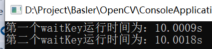

本文只是对OpenCV中使用的部分简单函数进行记录一下。
一. waitKey()函数：这个函数因为waitKey仅对窗口机制起作用，即namedWindow产生的窗口。若在此之前没有产生窗口，则waitKey相当于未执行。
waitKey有两个作用：
1. It waits for x milliseconds for a key press. If a key was pressed during that time, it returns the key's ASCII code. Otherwise, it returns -1.
2. It handles any windowing events, such as creating windows with cv::namedWindow(), or showing images with cv::imshow().
格式：
waitKey(x);
第一个参数： 等待x ms，如果在此期间有按键按下，则立即结束并返回按下按键的ASCII码，否则返回-1
如果x=0，那么无限等待下去，直到有按键按下
另外，在imshow之后如果没有waitKey语句则不会正常显示图像。
/**************************************************************************************
按照网上结果应该是：第一个waitkey未运行，第二个waitkey正常等待10s。
但是我测试是两个waitkey都是等待10s.
***************************************************************************************/
测试代码如下：
#include < opencv2/highgui/highgui.hpp >
#include < iostream >
#include < Windows.h >
using namespace cv;
using namespace std;
int main()
{
double duration;
// 测试没有namedWindow时的waitKey执行时间
duration = static_cast<double>(getTickCount());
waitKey(10000);
duration = static_cast<double>(getTickCount())
- duration;
duration /= getTickFrequency();
cout <<"第一个waitKey运行时间为：" << duration << 's' << endl;
Mat im = imread("D:\Document\pictures\Lena.bmp",0);
namedWindow("Lena");
imshow("Lena",im);
// 测试有namedWindow时的waitKey执行时间
duration = static_cast(getTickCount());
waitKey(10000);
duration = static_cast(getTickCount())- duration;
duration /= getTickFrequency();
cout <<"第二个waitKey运行时间为：" << duration << 's' << endl;
Sleep(20000);
return 0;
执行结果如下：从执行结果可以看出，第一个结果并未如期执行，第二个结果如期执行了。
下面是我测试的结果，两个都是正常等待10s:

vs2017 或者 vs2015 安装、配置 opencv4.1_慕课手记
vs2015配置OpenCv4.0 - 简书
vs2015 + opencv3.4 配置_人工智能_君只见独不见的专栏-CSDN博客
Opencv学习笔记1：安装opencv和VS2015并进行环境配置
VS2017+OpenCV4.1.0(VC15)VS2015+OpenCV3.4.1(VC14) 配置